Carta Tecnica OMIRA
Data: 1935-1937 scala: 1:5000
Supporto e tecnica di riproduzione: digitale numero fogli: 17
Comparazione tra carta tecnica OMIRA del 1935 con oggi.
L’effetto “occhio di bue” ci permette di vedere come era la città al tempo in un particolare punto.
Descrizione: cartografia realizzata col metodo aerofotogrammetrico “Nistri” dalla Soc. An. Ottico Meccanica Italiana e Rilevamenti Aerofotogrammetrici (O.M.I.R.A.) di Roma; committente è il Comune di Palermo che detiene le tavole originali a colori. L’orografia è rappresentata mediante curve di livello (equidistanza m 5) e punti quotati. Il sistema cartesiano di riferimento è di tipo locale ed ha come origine il punto trigonometrico di 2° ordine “La Martorana” di piazza Bellini.
Dal libro Repertorio cartografico & aerofotografico - CRICD Palermo 01/03/2010
KML: Download KML file
Bibliografia:
REPERTORIO CARTOGRAFICO E AEROFOTOGRAFICO
CRicd - Centro regionale per l'inventario, la catalogazione e la documentazione dei beni culturali e ambientali.
Servizio Documentazione - Unità Operativa X - Aerofototeca
Stampa:
Priulla, Palermo 2010
Qui trovi il file pdf del libro Repertorio cartografico & aerofotografico - CRICD Palermo 01/03/2010
Quadro unione tavole al 5000
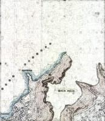 |
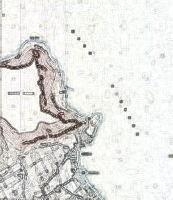 |
 |
|
|
|---|---|---|---|---|
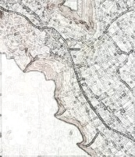 |
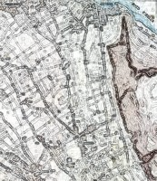 |
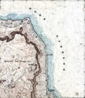 |
|
|
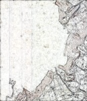 |
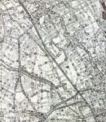 |
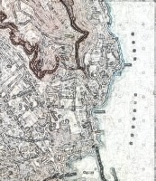 |
|
|
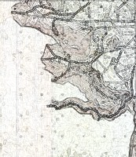 |
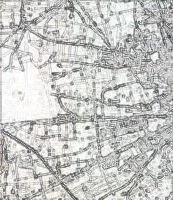 |
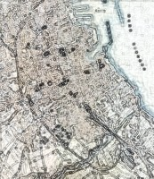 |
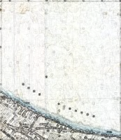 |
|
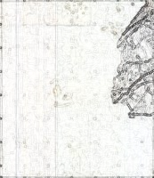 |
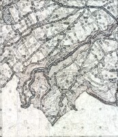 |
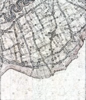 |
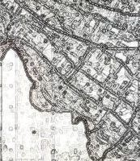 |
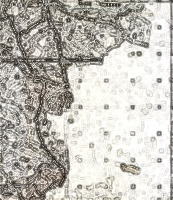 |
Carta Tecnica Irta
Data: 1955-1957 scala: 1:5000
Supporto e tecnica di riproduzione: digitale numero fogli: 12
Comparazione tra carta tecnica IRTA del 1955 con oggi.
L’effetto “occhio di bue” ci permette di vedere come era la città al tempo in un particolare punto.
Descrizione: Al 1955 risalgono le riprese in bianco e nero effettuate dall’Istituto Rilievi Terrestri Aerei di Milano (IRTA) e conservate dalla C.G.R. di Parma da cui l’Aerofo-toteca.
La cartografia è composta da 4296 fotogrammi in bianco e nero, riprodotti sia su supporto cartaceo che digitale, che rappresentano gran parte delle province di Palermo, Trapani e Agrigento. Queste immagini, riprese sia ad alta che a bassa quota, documentano nitidamente una vasta porzione di territorio siciliano prima delle grandi trasformazioni urbanistico-edilizie intervenute a partire dagli anni ’60.
Negli anni Ottanta, ha acquisito i fotogrammi comprendenti l’area della città di Palermo; è un volo di straordinario interesse in quanto documenta, con grande nitidezza e ricchezza di dettaglio, la città ed il territorio nel momento precedente la grande espansione urbanistico-edilizia.
Dal libro Repertorio cartografico & aerofotografico - CRICD Palermo 01/03/2010
KML: Download KML file
Bibliografia:
REPERTORIO CARTOGRAFICO E AEROFOTOGRAFICO
CRicd - Centro regionale per l'inventario, la catalogazione e la documentazione dei beni culturali e ambientali.
Servizio Documentazione - Unità Operativa X - Aerofototeca
Stampa:
Priulla, Palermo 2010
Qui trovi il file pdf del libro Repertorio cartografico & aerofotografico - CRICD Palermo 01/03/2010
")
{kind=link}
#OpenDataSicilia
Che cos’è
#opendatasicilia è una iniziativa civica che si propone di far conoscere e diffondere la cultura dell’open government e le prassi dell’open data nel nostro territorio e aprire una discussione pubblica partecipata.
Chi siamo
Siamo un gruppo di cittadini con diverse storie, competenze, professioni. Siamo accomunati dalla genuina volontà di contribuire a migliorare la qualità della vita della nostra comunità. Lo vogliamo fare con spirito di collaborazione e concretezza.
 |
Ci trovi in questi luoghi:
Informazioni
Realizzato da:
@aborruso, @piersoft, @cirospat e @gbvitrano
per Open Data Sicilia
Rielaborazione 2026:
Web app progettata e sviluppata da @gbvitrano in collaborazione con Claude AI (Anthropic) che ha affiancato le scelte architetturali, l'ottimizzazione del codice e lo sviluppo delle funzionalità di visualizzazione geospaziale.
Le cartografie storiche in dotazione al Comune di Palermo e presenti nel Portale Cartografico dalla società comunale in house per i servizi informatici SISPI SPA, sono state scansionate e georeferenziate dal Geometra Liborio Plazza del Comune di Palermo
Portale Cartografico a cura di: SISPI SPA
SiciliaHub/mappe: repo github in cui si trovano le mappa create dagli utenti della comunità OpenDataSicilia.it
Pianta della Città di Palermo e dintorni, redatta dall'Ufficio Tecnico Municipale - 19xx - scala 1:8000 - Fonte Map Warper - Uploaded by utente
Un ringraziamento particolare va a @napo che con il lavoro: mappa di Trento 1915 - da un libro di Cesare Battisti ci ha fatto riscoprire la bellezza e l'importanza delle mappa storiche.

Creative Commons Attribuzione 4.0 Internazionale - Creative Commons Attribuzione 4.0 Italia